전략의 출발점 — 추세 속 되돌림 찾기
강사는 전략을 주기 전에 먼저 선을 그어요. 아무리 수익이 나는 전략이라도 남의 것을 그대로 가져다 써서 꾸준히 돈을 번 사람은 없다는 거예요. 같은 전략을 두 사람에게 줘도 한 명은 벌고 한 명은 잃어요. 성격도, 차트를 볼 수 있는 시간도 다르기 때문이에요. 그래서 이 전략은 정답이 아니라 연습을 시작할 출발점이에요.
내놓는 전략은 일봉 하나만 보는 단순한 추세 추종 전략이에요. 하루에 한 번만 차트를 확인하면 돼서 시간이 적게 들어요. 강사는 이 전략 하나로도 꽤 괜찮은 수입을 올렸다고 해요.
전체 흐름은 네 단계예요
규칙은 식별, 예측, 결정, 실행 순서로 짜여 있어요. 앞 단계를 통과해야 다음 단계로 넘어가요. 강사는 이를 '만약 ~라면 ~한다'는 조건문처럼 생각하라고 해요.
1단계 식별 — 지금이 되돌림 구간인가요
1부에서 배운 대로 시장은 한 방향으로 달리는 1국면과, 잠시 거꾸로 돌아오는 2국면을 번갈아 가요. 이 전략은 2국면만 노려요. 상승 추세라면 내려오는 눌림, 하락 추세라면 올라오는 반등이에요. 달리는 1국면이라면 이 전략으로는 들어가지 않아요.
아래 슬라이드에서 노란 화살표가 2국면이 끝나는 자리예요. 가운데 보라색 가로선은 상승 구간에서 지지였던 가격이 하락 구간에서는 저항으로 바뀌는 모습을 보여 줘요. 이런 자리에서 되돌림이 나오면 확률이 더 높아지니 추가 필터로 써도 된다고 해요.
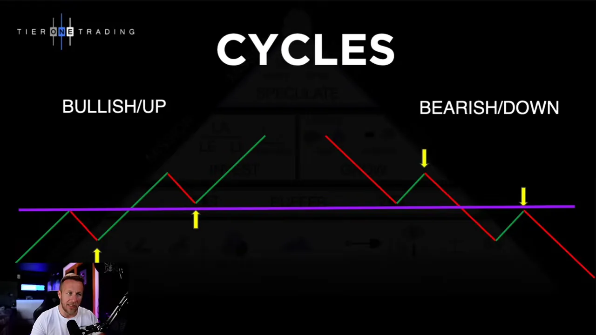
EMA 8·20·50으로 방향 예측하기
되돌림을 찾았다면, 이제 가격이 원래 추세 방향으로 다시 갈지 판단해요. 여기에 쓰는 도구가 지수이동평균이에요. 강사는 EMA를 세 개 써요. 기간은 8, 20, 50이에요.
단순이동평균 대신 지수이동평균을 고른 이유는 반응 속도예요. 이동평균은 어차피 지나간 가격으로 계산해서 늦게 따라오는데, 지수이동평균은 최근 가격에 더 큰 무게를 줘서 덜 늦어요. 세 개를 겹쳐 보는 이유는 셋이 같은 말을 할 때 신뢰도가 높아지기 때문이에요. 색은 구분하기 쉽게 다르게 칠해요. 영상에서는 8이 노랑, 20이 분홍, 50이 파랑이에요.
조건은 '부채꼴'이에요
아래 슬라이드 왼쪽이 상승 추세, 오른쪽이 하락 추세예요. 왼쪽 아래 범례를 보면 위에서부터 EMA 8, 20, 50 순서이고, 오른쪽은 거꾸로 50, 20, 8 순서예요. 즉 8이 가격에 가장 가깝고, 20이 그다음, 50이 가장 멀어야 해요. 선 사이가 넓게 벌어질수록 추세가 강해지고 있다는 뜻이에요.
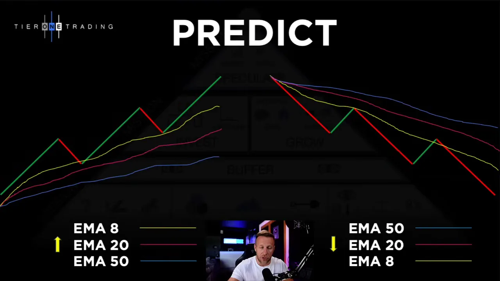
선이 꼬이면 쉬어요
다음 슬라이드는 무효인 경우예요. 오른쪽 끝을 보면 노란 8 EMA가 분홍 20 EMA 아래로 파고들며 선들이 엉켜요. 이렇게 교차가 시작되면 곧 반전이 오거나 오래 옆으로 기는 횡보가 올 수 있어요. 들어가도 필요 이상으로 오래 묶여 있게 돼요. 그래서 이 구간에서는 되돌림이 보여도 셋업을 찾지 않아요.
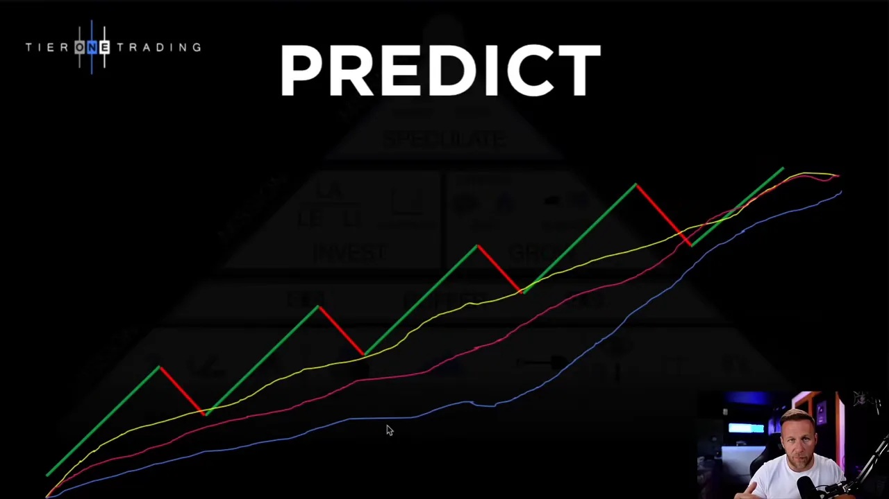
진입 캔들 고르기 — 30% 규칙과 8 EMA
식별과 예측을 통과했다면, 이제 실제로 언제 들어갈지 정해요. 여기서는 특정 모양의 캔들, 즉 가격 행동 패턴을 기다려요. 1부에서 다룬 도지나 긴 꼬리 캔들 같은 것들이에요.
시가와 종가가 끝쪽 30% 안에
하락 추세에서 반등을 노릴 때는 시가와 종가가 모두 캔들 전체 길이의 아래쪽 30% 안에 있어야 해요. 여기서 전체 길이는 몸통만이 아니라 고가부터 저가까지예요. 가격이 위로 밀려 올라갔다가 결국 아래로 끌려 내려온 줄다리기의 흔적이에요.
아래 슬라이드에서 빨간 캔들과 초록 캔들 모두 몸통이 맨 아래 점선(30%) 아래에 붙어 있어요. 색은 상관없고 위치가 중요하다는 뜻이에요. 50% 선을 기준으로 쓰는 사람도 있지만, 강사는 30% 아래를 고집해요. 50%로 넓히면 신호는 늘지만 질이 떨어진다고 해요.
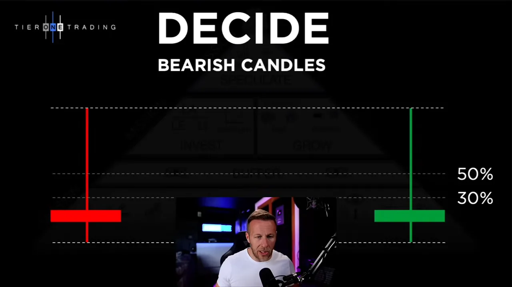
상승 추세라면 그대로 뒤집어요. 시가와 종가가 위쪽 30% 안에 있어야 해요. 아래 슬라이드에서 몸통이 맨 위에 붙고 아래로 긴 꼬리가 달린 캔들이에요. 경계가 애매하면 피보나치 도구에 30% 눈금을 추가해 캔들 위에 대 보면 돼요.
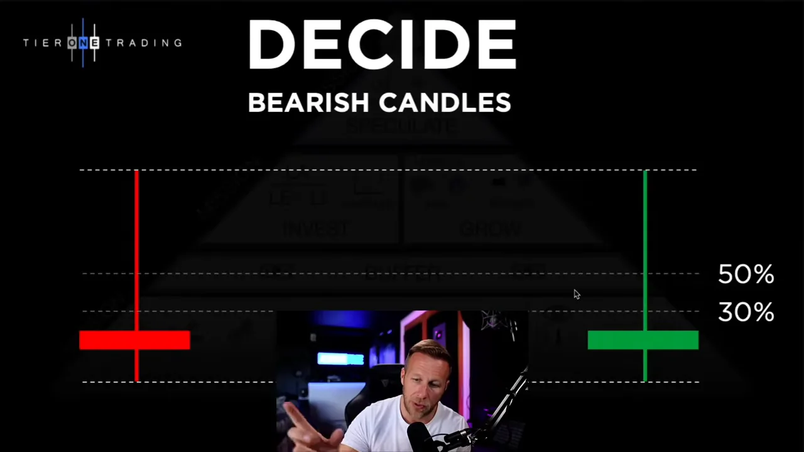
이 캔들을 어디서 찾느냐가 다음 슬라이드예요. 상승 추세의 눌림이 끝나는 자리, 노란 8 EMA 근처에 십자 모양 신호 캔들이 모여 있어요. 강사는 바닥과 꼭대기를 정확히 잡는 건 거의 불가능하지만, 이 방식이 그에 가장 가깝게 다가가는 방법이라고 해요.
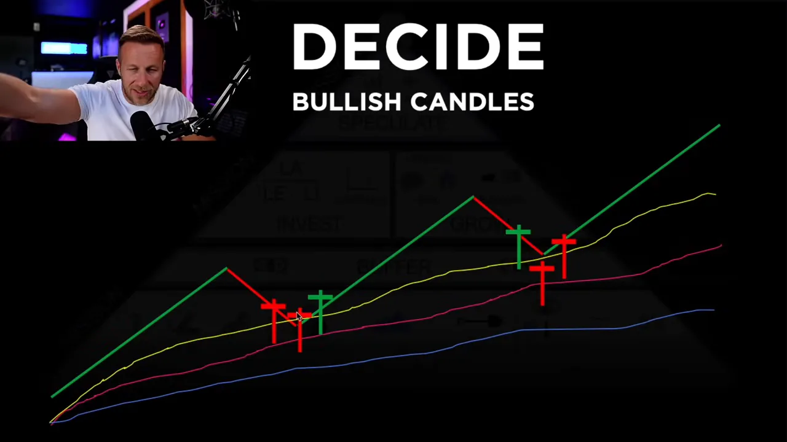
8 EMA에 닿았나요
EMA 세 개는 순서 확인용이고, 신호 판단에는 가격에 가장 가까운 8 EMA 하나만 써요. 하락 추세에서는 신호 캔들이 8 EMA에 닿거나 그 위에 있어야 해요. 상승 추세에서는 닿거나 그 아래에 있어야 해요.
아래 슬라이드는 노란 선이 8 EMA이고, 선 근처에 작은 캔들 표시들이 있어요. 빨간 X가 붙은 캔들은 선에 닿지도, 넘어서지도 않아서 무효예요. 나머지는 선에 걸치거나 넘어서 있어서 유효해요.
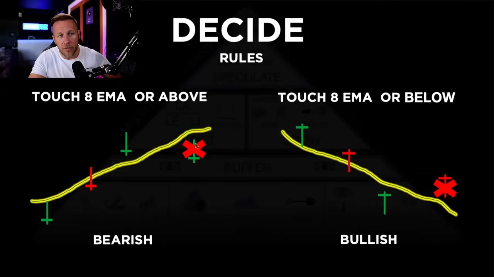
주문 세 개 넣기
세 단계를 통과한 캔들이 나왔다면 이제 주문을 넣어요. 아래 차트는 파운드/달러 일봉이에요. 노란 화살표가 가리키는 캔들이 모두 지금까지 설명한 규칙을 만족한 진입 신호예요. 하락 추세 내내 반등 구간마다 신호가 하나씩 나온 걸 볼 수 있어요.
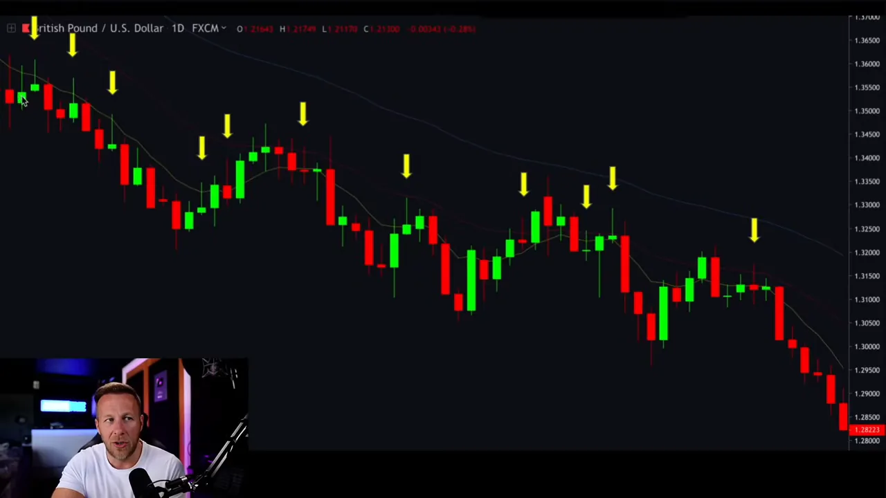
캔들이 마감된 뒤에만 넣어요
주문은 신호 캔들이 완전히 마감된 뒤에 넣어요. 마감 5~10분 전에는 조건을 채운 것 같아도, 마지막에 가격이 움직이면 30% 안에 들지 못할 수 있어요. 일봉이 바뀌는 시각은 뉴욕 시간 오후 5시, 영국 시간으로는 밤 10시예요. 사는 곳의 시각은 직접 검색해서 맞추면 돼요.
하락 추세라면 주문은 이렇게 넣어요
주문 세 개 모두 신호 캔들의 고가와 저가를 기준으로 정해요. 강사의 설명대로라면 신호 캔들 저가가 1.0000일 때 진입 주문은 2핍 아래인 0.9998에 들어가요. 아래 그림은 영상 후반 저널 시연에 나오는 실제 하락 거래(뉴질랜드달러/캐나다달러) 숫자로 그렸어요.
- 진입 — 신호 캔들 저가보다 2핍 아래에 매도 역지정가 주문을 넣어요. 지금보다 더 내려가야만 체결되는 주문이라, 하락이 실제로 이어질 때만 들어가게 돼요.
- 손절 — 체결되면 신호 캔들 고가보다 2핍 위에 매수 역지정가 주문을 넣어요. 손절은 주문 종류가 아니라 쓰임새의 이름이에요. "여기까지 오르면 내가 틀린 걸 인정한다"는 뜻이에요.
- 목표 — 진입~손절 거리와 똑같은 거리만큼 아래에 매수 지정가 주문을 넣어요.
- 유효기간 — 다음 날 안에 체결되지 않으면 주문을 지워요.
아래 장면은 신호 캔들 하나에 세 주문을 표시한 모습이에요. 왼쪽 위 글씨가 위에서부터 손절(매수 역지정가), 진입(매도 역지정가), 목표(매수 지정가) 순서예요.
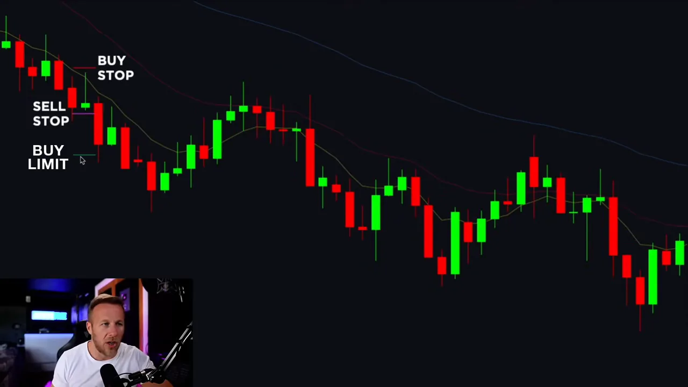
상승 추세와 나란히 보기
상승 추세라면 방향만 모두 뒤집어요.
| 항목 | 하락 추세 (매도) | 상승 추세 (매수) |
|---|---|---|
| EMA 순서 | 8 < 20 < 50 | 8 > 20 > 50 |
| 신호 캔들 | 시가·종가가 아래쪽 30% 안 | 시가·종가가 위쪽 30% 안 |
| 8 EMA 조건 | 닿거나 그 위 | 닿거나 그 아래 |
| 진입 | 저가 2핍 아래 매도 역지정가 | 고가 2핍 위 매수 역지정가 |
| 손절 | 고가 2핍 위 매수 역지정가 | 저가 2핍 아래 매도 역지정가 |
| 목표 | 1:1 거리의 매수 지정가 | 1:1 거리의 매도 지정가 |
왜 1:1부터일까요
목표를 2:1이나 3:1로 잡거나 여러 개로 나눌 수도 있어요. 그래도 강사는 처음에는 1:1로 테스트하라고 해요. 가장 보수적이라 결과도 가장 밋밋하겠지만, 거기서 시작하면 나아질 일만 남는다는 거예요. 30% 규칙과 EMA 조건 덕분에 승률이 높아서 1:1로도 충분히 수익이 났다고 해요. 일봉이라 한 번 거래가 하루에서 사흘 정도 걸리는데, 오래 끌지 않으니 롤오버 비용도 덜 붙어요.
진입 자리도 짚고 가요. 바닥을 정확히 잡으려 하지 말고, 되돌림 근처에서 들어가는 게 목표예요. 반등이 이미 시작된 뒤라도 다시 8 EMA에 닿는 신호가 나오고 규칙이 맞으면 들어가도 돼요. 강사는 이 규칙들을 정리한 거래 계획 문서를 설명란에 올려 뒀다고 해요.
실제 차트로 연습하기 — 파운드/달러
이제 실제 차트에 규칙을 대 봐요. 강사는 지난 12개월치 파운드/달러 일봉에 EMA 세 개를 슬라이드와 같은 색으로 띄워요. 하락 추세가 뚜렷하고, 달리는 구간과 되돌림이 규칙적으로 번갈아 나와요. 왼쪽 위에서부터 8·20·50이 순서대로 벌어져 있어요. 중간에 선이 잠깐 꼬인 두 곳은 셋업을 찾지 않는 구간이에요.
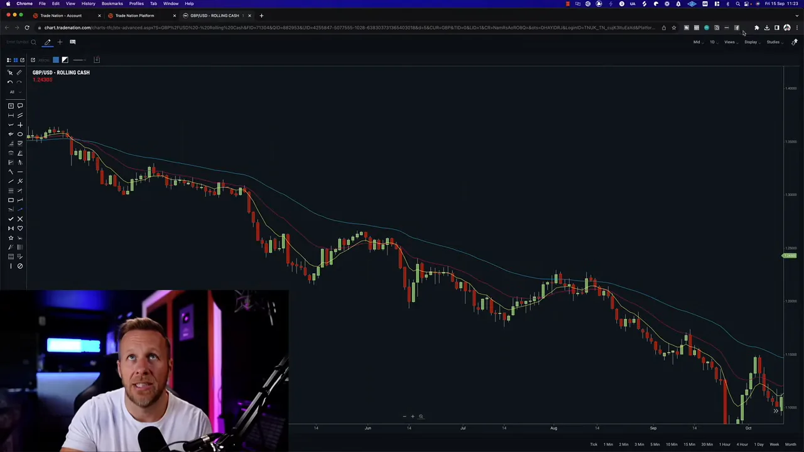
실제 차트는 그림보다 지저분해요
강사가 먼저 보여 주는 건 신호처럼 보이지만 아닌 캔들이에요. 첫 번째 후보는 언뜻 맞아 보이는데, 피보나치로 재 보면 시가·종가가 50% 근처에 있어요. 다른 하나는 35%까지 올라와 있어서 역시 무효예요. 이론 그림에서는 쉽게 구분되던 것이 실제 차트에서는 확대해서 재 봐야 갈려요.
조건을 다 갖춘 캔들이 나왔는데 다음 날 가격이 주문가까지 내려오지 않는 경우도 있어요. 그러면 주문을 지워요. 그런데 바로 다음 날 또 신호가 나왔고, 그 캔들 기준으로 다시 주문을 걸었더니 체결돼서 목표가에 닿았어요. 아래 장면이 그 거래예요. 파란 화살표 아래 신호 캔들 기준으로 손절(빨강), 진입, 목표(초록) 가로선을 그었어요.
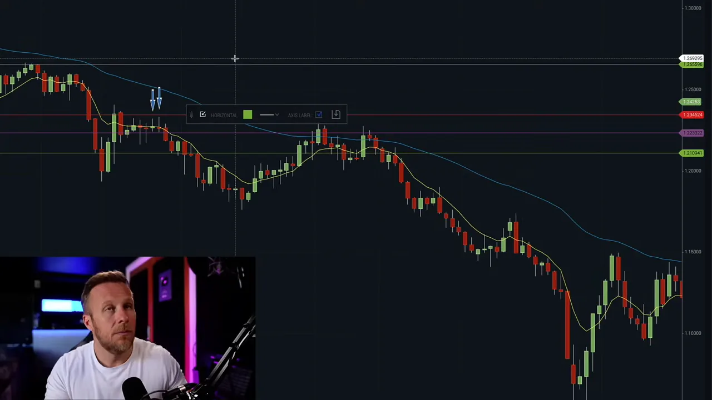
"거의 닿았다"는 없어요
훑어보다가 8 EMA에 닿았는지 애매한 캔들이 나오자, 강사는 확대해서 확인하라고 해요. 닿지 않았다면 무효예요. 일관성을 지키려면 판단이 예/아니오로 갈려야 한다는 거예요.
you can't be half pregnant and you need consistency in your trading
반쯤 임신한 상태는 없어요. 트레이딩에는 일관성이 필요해요.
— 영상 33:04
이 통화쌍 하나에서 4월부터 10월까지 대충 훑어도 기회가 4~6번, 한 달에 한 번꼴이었다고 해요. 주요 통화쌍 조합 28개에 지수까지 더하면 기회는 더 늘어나요. 일봉이라 밤마다 5분이면 확인할 수 있어서, 여러 시장을 동시에 봐도 시간이 많이 들지 않아요.
트레이딩뷰로 세팅하고 실시간 셋업 잡기
전략을 알았으니 바로 차트로 달려가고 싶겠지만, 강사는 먼저 도구부터 갖추라고 해요. 차트 플랫폼 트레이딩뷰를 소개하는데, 기능이 많고 브로커 계좌를 연결할 수 있어서예요. 강사는 주식 종목 검색이나 시장 뉴스 확인에도 쓴다고 해요.
먼저 경고 하나
트레이딩뷰에는 사용자들이 의견과 매매 아이디어를 올리는 커뮤니티 공간이 있어요. 강사는 이곳을 아예 열지 말라고 해요. 저마다 자기가 맞다고 주장하는 환경은 초보에게 불안만 키운다는 거예요. 강사가 만난 프로 트레이더들은 남의 분석이 맞다 틀리다 말하지 않는다고 해요. 돈 버는 방법은 수천 가지이고, 다른 사람의 시스템이 어떻게 짜였는지 모르니 관심을 두지 않는다는 거예요.
기본 화면 꾸미기
상단 메뉴에서 차트 화면을 열면 아래와 같은 모습이에요. 오른쪽 세로 목록이 관심 종목이에요. 더하기 버튼으로 통화쌍을 추가하는데, 강사는 주요 통화쌍 조합 28개를 모두 넣으라고 해요. 가운데가 차트, 오른쪽 끝이 가격 눈금, 아래가 시간 축이에요. 위쪽에서 시간 틀을 일봉으로 바꾸고, 배경과 캔들 색은 취향대로 바꿔요.
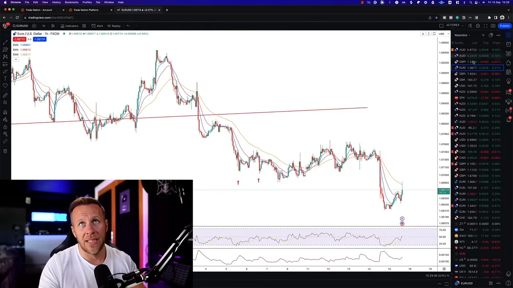
오른쪽 아이콘 줄에는 알림이 있어요. 가격이 특정 선을 넘으면 문자, 이메일, 소리로 알려 줘서 차트 앞에 붙어 있지 않아도 돼요. 왼쪽에는 선 긋기 같은 그리기 도구가 모여 있어요. 강사는 아래 창에 RSI(Relative Strength Index)와 ATR(Average True Range)도 띄워 둬요. ATR은 통화쌍마다 하루 평균 움직임을 보려는 용도라고 해요.
브로커 연결과 모의 거래
화면 아래 '트레이딩 패널'을 누르면 연결할 수 있는 브로커 목록이 떠요. 이미 계좌가 있는 브로커를 고르고 아이디와 비밀번호를 넣으면 연결돼요. 브로커가 없다면 맨 앞의 모의 거래 계좌로 연습할 수 있어요. 연결하면 포지션, 주문, 거래 내역을 이 화면에서 볼 수 있어요.
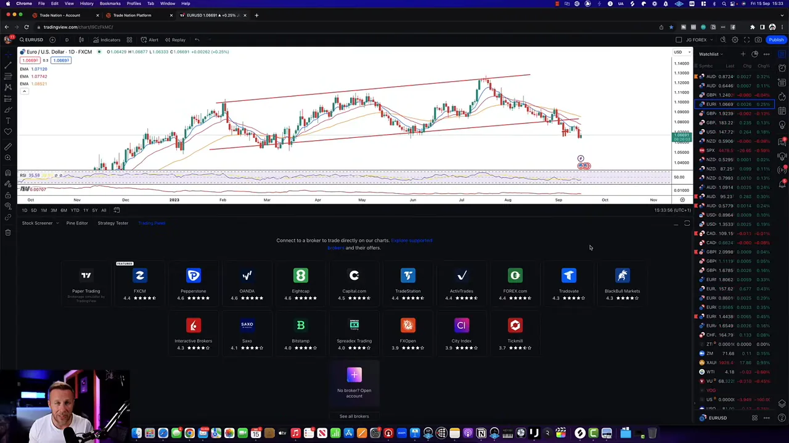
EMA 세 개 띄우기
'지표'를 눌러 '이동평균 지수'를 검색하면 EMA가 차트에 붙어요. 선을 더블클릭하면 설정 창이 떠요. 기간을 8, 20, 50으로 바꾸고, 종가 기준 계산은 그대로 두고, 스타일 탭에서 색을 고르면 돼요. 아래 장면이 그 설정 창이에요.
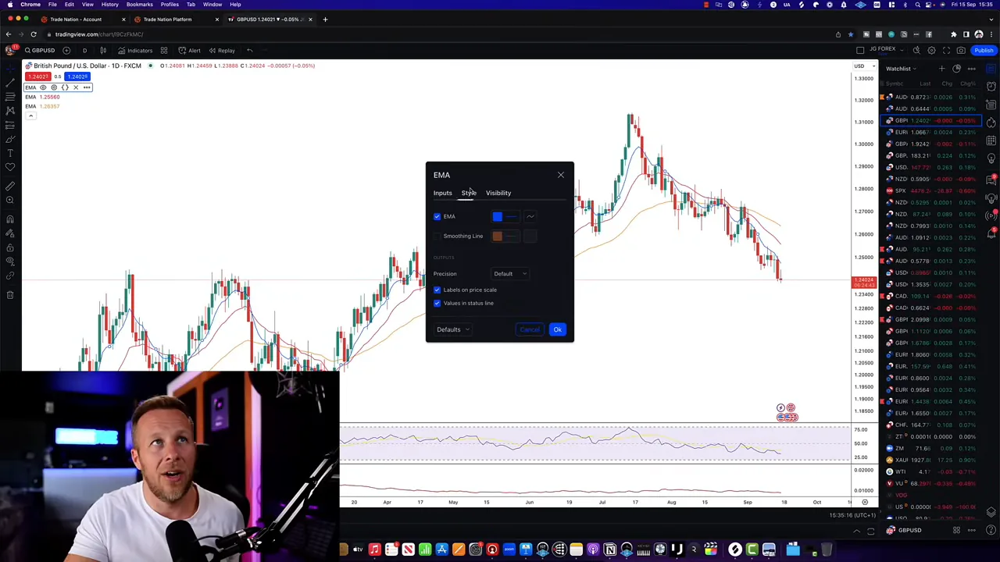
실시간 셋업 — 달러/엔
녹화하던 금요일 오후, 강사는 통화쌍을 넘기다 달러/엔 일봉에서 셋업을 찾아요. 상승 추세의 2국면 되돌림에서 8 EMA에 닿은 핀 바가 나왔어요. 아래 장면에서 빨간 화살표가 가리키는 캔들이에요.
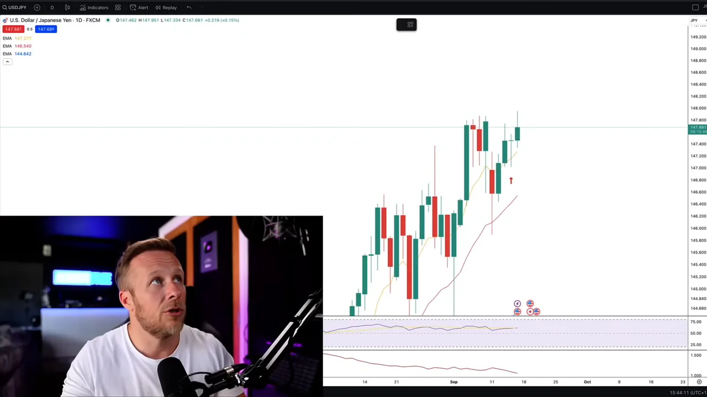
피보나치 되돌림 도구를 캔들 아래에서 위로 대 보니 시가·종가가 위쪽 30% 안이었어요. 이제 가격을 읽어요. 캔들에 십자선을 올리면 왼쪽 위에 시가·고가·저가·종가가 떠요.
| 항목 | 캔들 값 | 주문가 |
|---|---|---|
| 진입 (매수 역지정가) | 고가 147.56 | 147.58 |
| 손절 (매도 역지정가) | 저가 147.01 | 146.99 |
| 목표 (매도 지정가) | 진입에서 59핍 위 | 148.17 |
아래 장면이 신호 캔들 옆에 세 주문을 표시한 모습이에요. 위에서부터 목표(매도 지정가), 진입(매수 역지정가), 손절(매도 역지정가)이에요. 강사가 실제 계좌로 들어가 있던 거래예요. 다만 147처럼 딱 떨어지는 가격 바로 위아래라면 숨 쉴 틈을 조금 더 주는 사람도 있다고 덧붙여요.
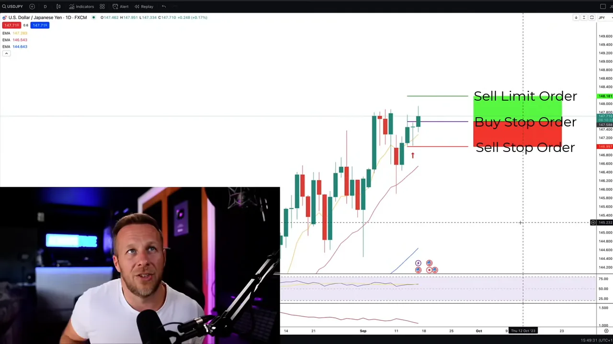
목표가를 재는 네 가지 방법
가장 편한 건 '롱 포지션' 도구예요. 진입가를 찍으면 손절까지의 빨간 상자와 목표까지의 초록 상자가 생기고, 손익비가 1이 되도록 맞추면 목표가가 나와요. 아래 장면에서 두 상자의 높이가 같고, 가운데 표시에 손익비 1이 떠 있어요.
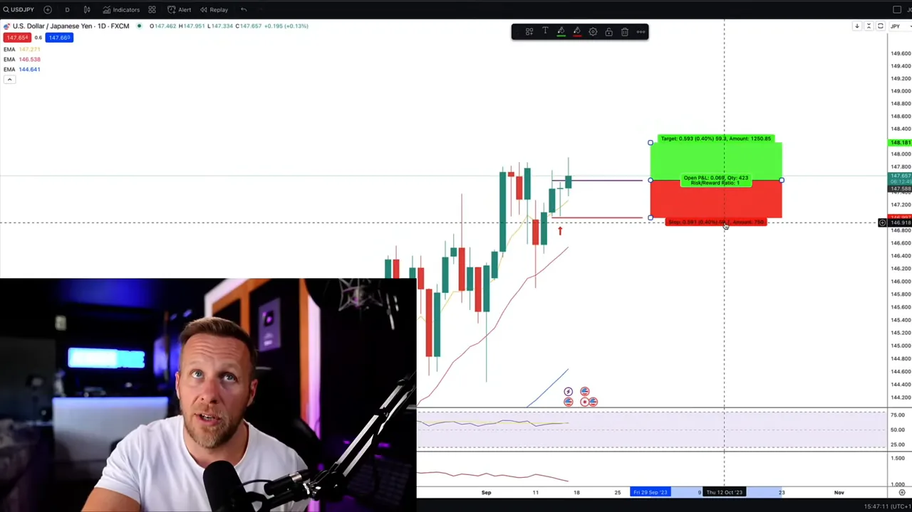
다른 방법도 있어요. 자 도구로 진입~손절 거리(58.4핍)를 재서 그만큼 위로 옮기거나, 피보나치 도구에 100% 눈금을 더해 재거나, 사각형을 그려 복사해 붙이는 방식이에요. 강사는 피보나치는 번거롭다며 롱·숏 포지션 도구나 자를 추천해요.
계좌 크기에 맞춰 포지션을 계산해 1%만 걸었다면 이 거래는 1% 수익 아니면 1% 손실로 끝나요. 강사는 하나 더 보여 줘요. 아래 뉴질랜드달러/캐나다달러 일봉에서는 최근 몇 번의 신호가 이겼고, 지금 진행 중인 캔들이 또 하나의 신호가 될 수 있어요. 다만 아직 마감 전이라 확정할 수 없어요.
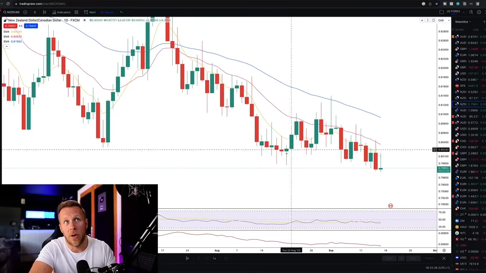
테스트와 저널링
바 리플레이로 실시간처럼 연습해요
과거 차트를 한눈에 보면 신호가 쉬워 보여요. 실제 시장에서는 캔들이 하나씩 생겨나니 훨씬 헷갈려요. 그래서 강사는 트레이딩뷰의 바 리플레이를 권해요. 위쪽 재생 버튼을 누르고 시작 지점을 고르면 그때부터 캔들을 다시 재생해요. 아래 장면처럼 속도는 1초에 캔들 한 개부터 10개까지 고를 수 있어요.
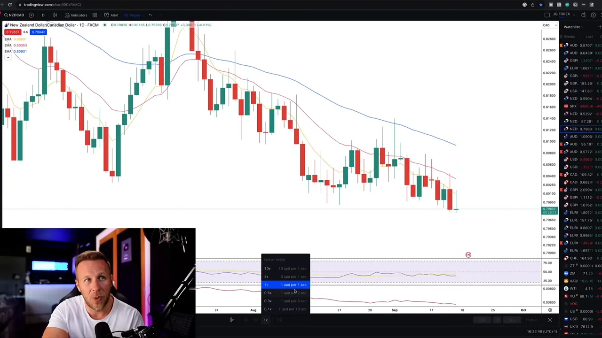
순서를 모르겠으면 낮은 시간 틀로
테스트하다 보면 일봉 하나 안에서 주문 체결과 손절 중 무엇이 먼저였는지 모를 때가 있어요. 이럴 때는 같은 날짜를 시간봉이나 15분봉으로 내려서 확인해요. 강사의 예는 8월 16일 수요일 캔들이에요. 일봉만 보면 "들어갔다가 손절당했다"로 보였는데, 시간봉으로 내려 보니 가격이 먼저 위로 올라 손절 자리를 넘었어요. 그러면 셋업이 무효라 애초에 들어가지 않았을 거래예요.
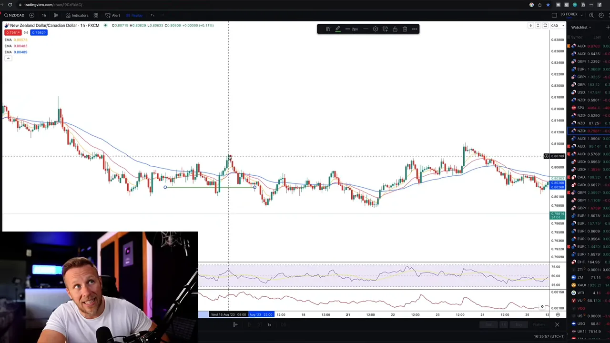
이 작은 확인이 테스트 결과를 바꿔요. 강사는 백테스트의 목적이 기대를 높이는 게 아니라 낮추는 데 있다고 말해요. 결과를 부풀리는 방향으로 기록하면 실전에서 실망만 커져요.
하나 더, 차트 아래쪽에 붙은 작은 깃발 아이콘은 경제 지표 발표 일정이에요. 예를 들어 영란은행 금리 결정이 언제인지, 예측치와 이전 값이 얼마인지 보여 줘요. 아래처럼 아이콘을 누르면 관련 뉴스도 볼 수 있어서, 큰 발표 전에는 거래를 피할지 판단하는 데 써요.
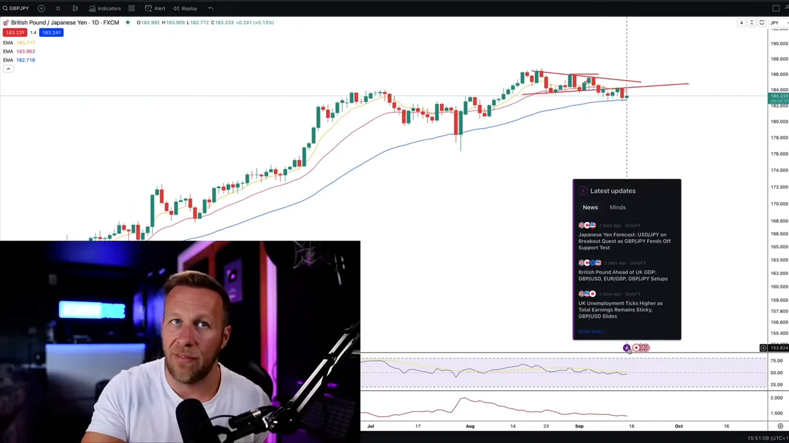
대부분이 건너뛰는 단계
강사는 여기서 목소리를 높여요. 트레이딩은 사업이고, 대부분이 이 테스트와 기록 단계를 건너뛰어서 트레이더 90%가 실패한다고요.
백테스트는 과거 신호를 하나씩 확인해 날짜, 진입·청산 시점, 실수, 뉴스 여부를 적는 작업이에요. 아래 장면은 강사가 쓰는 백테스트 스프레드시트예요. 위쪽에 승/패 비율 원그래프와 누적 핍 그래프가 있고, 아래로 거래 데이터·주문 정보·청산 정보·추가 정보·결과 열이 이어져요.
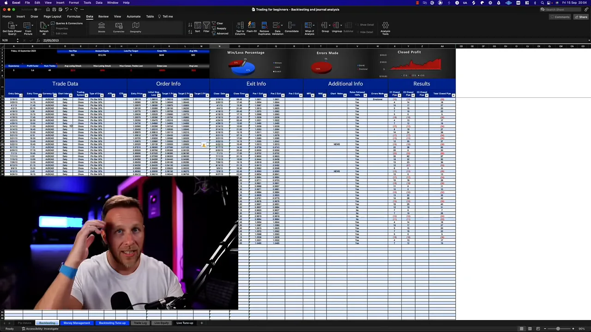
이 기록으로 승률을 알고, 포지션 크기를 얼마나 공격적으로 늘릴지, 자산 곡선이 어떻게 그려질지도 미리 볼 수 있어요. 무엇보다 마음이 버틸 근거가 생겨요. 테스트한 그대로만 거래하면 과거만큼의 확률로 이길 거라는 숫자가 눈앞에 있으니까요.
실전에서는 저널로 이어가요
실거래를 시작하면 기록을 멈추지 않아요. 저널의 목적은 두 가지예요. 하나는 전략 자체가 여전히 잘 작동하는지 보는 것, 다른 하나는 내가 계획대로 거래했는지 돌아보는 것이에요. 강사는 이렇게 요약해요.
what gets measured gets mastered
재는 것이 늘어요.
— 영상 1:03:46
아래 장면은 자기 점검용 저널 양식이에요. 열 이름이 위에서 보이는 대로, 분석할 때 기분, 진입할 때 기분, 청산할 때 기분, 실수 여부, 실수 내용, 개선을 위해 한 행동, 그리고 분기 점검 칸이에요.
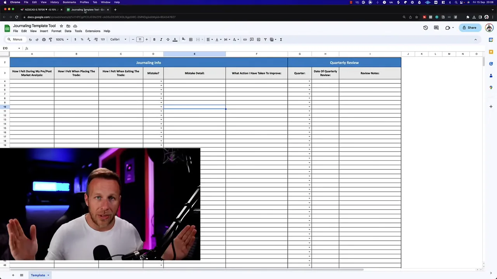
목표는 거래 계획을 백테스트 그대로 흠 없이 따르는 거예요. 계획은 1%라는데 그보다 크게 잃은 거래, 놓친 진입, 들어가지 말았어야 할 거래, 관리 실수로 잃거나 얻은 돈은 모두 실수로 적어요. 운 좋게 번 돈도 계획을 어겼다면 실수예요. 목표는 매달 실수 0이에요.
저널은 전략의 성능 변화도 알려 줘요. 실거래 승률이 백테스트보다 떨어지면 "내가 여전히 같은 방식으로 거래하나?"를 묻게 되고, 일곱 번 연속 손실이 와도 백테스트에서 매년 있던 일이라면 정상이라고 판단할 수 있어요. 목표를 더 멀리 잡아도 되는지, 손절에 숨 쉴 틈이 부족한지, 특정 통화쌍이나 요일, 시간대가 계속 손해를 내는지도 보여요.
저널 한 줄 채워 보기
시연은 뉴질랜드달러/캐나다달러의 하락 셋업이에요. 아래 장면에서 신호 캔들 옆 빨간 상자가 손절까지, 초록 상자가 목표까지의 거리예요.
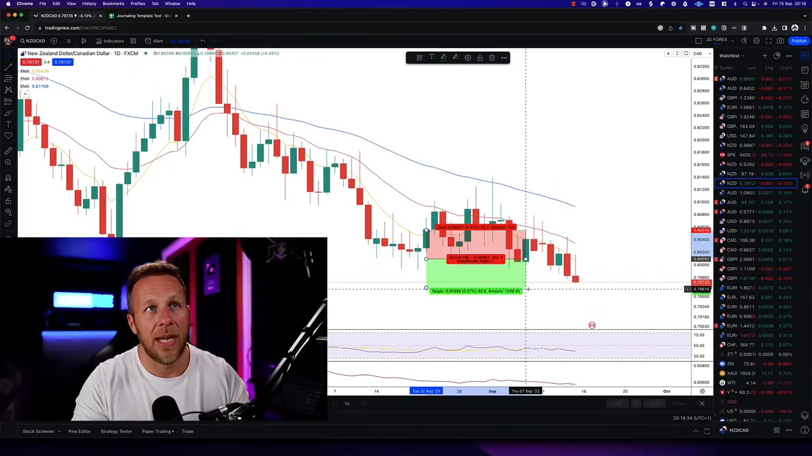
| 칸 | 적은 값 | 왜 적나요 |
|---|---|---|
| 진입 날짜·시각 | 2023-08-18, 22:00 | 일봉 마감 직후(영국 시간) 주문이 들어가요 |
| 통화쌍·시간 틀 | 뉴질랜드달러/캐나다달러, 일봉 | 나중에 시간 틀별 수익을 비교해요 |
| 전략·진입 유형 | Daily Chore, 핀 바 | 30%·50% 같은 변형을 구분해 비교해요 |
| 진입가 / 손절가 | 0.8009 / 0.8055 | 신호 캔들 저가 2핍 아래, 고가 2핍 위 |
| 목표가 | 0.7963 | 1:1 거리 |
| 청산 날짜·가격 | 2023-08-22, 0.8055 | 손절에 닿았어요 |
| 규칙 준수·실수 | 예 / 없음 | '아니오'가 쌓이면 수익이 안 나는 이유가 보여요 |
| 결과 | 46핍 손실 |
청산 시각은 낮은 시간 틀에서 정확히 찾아 적는 게 좋다고 해요. 영상에서는 시간이 걸려서 오후 3시로 가정했어요. 기록은 거래 당일에 시작하고, 청산하면 마저 채우라고 권해요.
같은 방식으로 9월 4일과 11일 거래까지 세 건을 채운 결과가 아래예요. 첫 줄은 손실, 두 줄은 이익이고, 맨 오른쪽 열에 핍 결과가 있어요. 세 건으로 결론을 낼 수는 없지만, 승률이 백테스트와 비슷하게 나왔다고 해요.
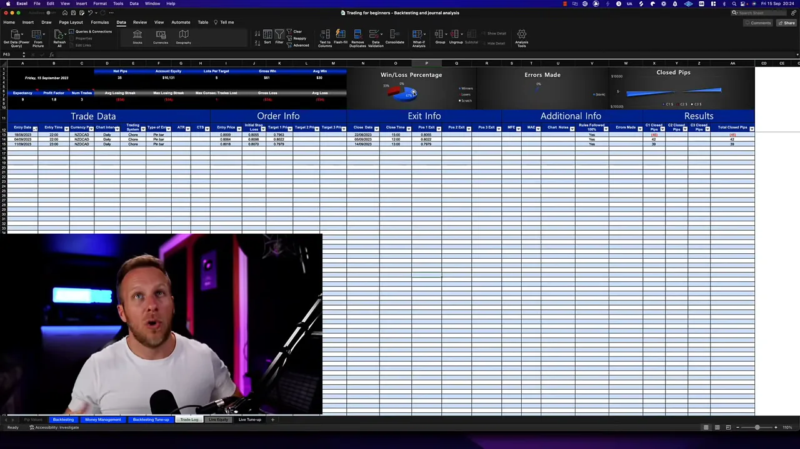
한 분기나 1년이 쌓이면 피벗 테이블로 통화쌍, 시간 틀, 요일, 월별로 쪼개 봐요. 어디서 돈을 흘리고 있는지가 보이는 단계예요. 자산 곡선이 쌓이면 포지션을 언제 키울지 판단하는 근거도 되고, 투자자에게 보여 줄 실적도 돼요.
수수료가 중요한 이유
강사는 이 시리즈의 목적이 돈을 불리는 것, 적어도 잃지 않는 것이라고 다시 말해요. 그래서 수익보다 덜 눈에 띄는 쪽, 시장에 돈을 흘리는 길을 짚어요. 아래 슬라이드의 네 가지예요.
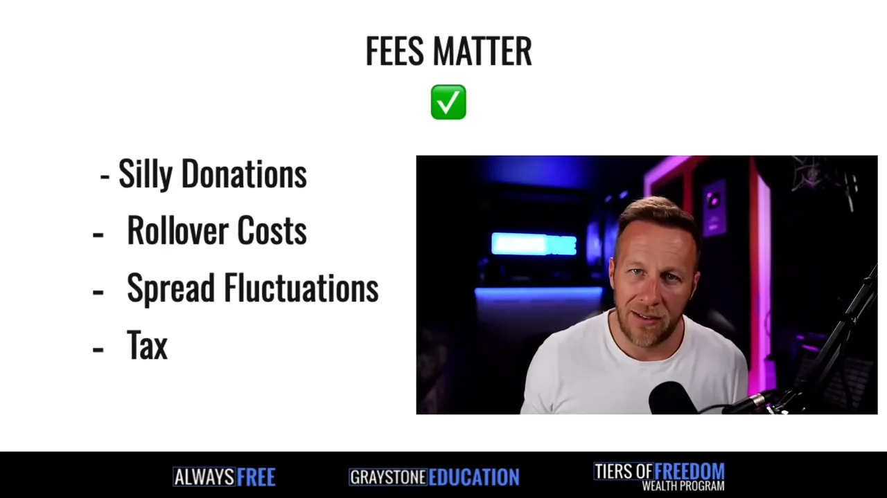
| 새는 곳 | 영상의 설명 |
|---|---|
| 어리석은 기부 | 검증된 시스템 없이 실제 돈으로 먼저 거래하는 것. 조급함이나 놓칠까 봐 두려운 마음 말고는 핑계가 없다고 해요 |
| 롤오버 비용 | 포지션을 하루 넘길 때마다 브로커가 떼는 비용. 이익 거래도 생각보다 덜 남는 이유예요 |
| 스프레드 변동 | 아시아 시간대처럼 사람이 차트를 안 볼 때 일부 브로커가 스프레드를 넓히는 것 |
| 세금 | 제대로 신고하지 않으면 나중에 벌금까지 물어 다 토해 낸다고 해요 |
강사는 사람들이 짧은 기간에 이룰 수 있는 건 과대평가하고, 2~3년에 이룰 수 있는 건 과소평가한다고 말해요. 시스템을 테스트하고 천천히 시작하면 결과는 복리로 커진다는 거예요.
세금은 회계사에게
세금은 결국 회계사와 상의하라는 게 결론이에요. 강사는 영국의 스프레드 베팅 계좌를 예로 들어요. 도박으로 분류돼서 수익에 세금이 붙지 않지만, 사례별로 따진다고 해요. 강사가 든 조건은 따로 본업 소득이 1만 5천 파운드 이상 있어야 하고, 계좌 한도가 10만 파운드라는 거예요. 주 하루 아르바이트로 5천 파운드를 벌면서 트레이딩으로 7만 파운드를 번다면, 트레이딩이 본업으로 보여 세금을 내야 한다고 해요.
1% 차이가 만드는 것
숫자 예시가 이 장의 핵심이에요. 매주 200달러를 50년 동안 넣고, 물가 상승을 따라 해마다 4%씩 금액을 늘린다고 가정해요. 아래 슬라이드처럼 연 8%로 불리면 50년 뒤 1,160만 달러가 돼요.
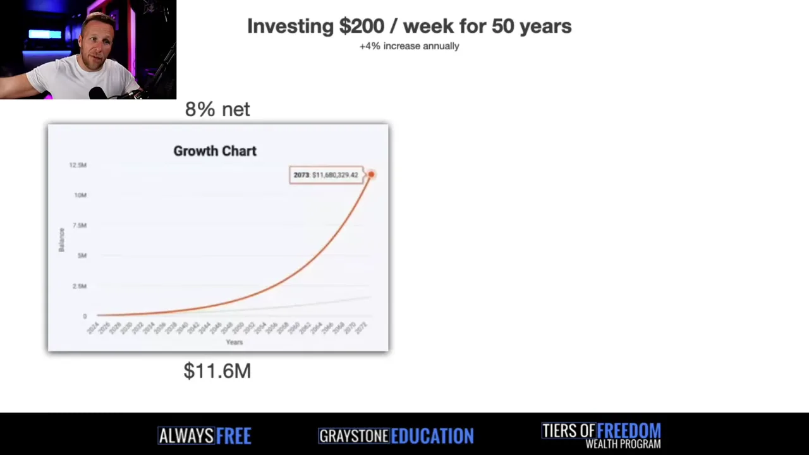
성과가 똑같은데 수수료가 1% 더 붙어 순수익률이 7%라면 840만 달러예요. 여전히 큰돈이지만 320만 달러가 사라졌어요. 강사가 더 와닿는다고 보는 건 시간이에요. 소득의 20%를 투자해 소득을 대체하기까지 연 8%면 27년, 연 7%면 34년이 걸린다고 해요.
강사는 브로커 비용, 어리석은 기부, 롤오버, 스프레드가 합쳐 1%만 돼도 이런 차이가 난다고 말해요. 10년쯤 지나 "성과는 좋았는데 왜 돈이 이것밖에 없지?" 하고 후회하지 않으려면 지금 수수료를 챙기라는 거예요.
수수료 없이 0
수수료 뺀 뒤 0
사라진 돈 0
가정: 매년 초에 1년치(주 금액×52)를 넣고, 넣는 금액은 영상처럼 해마다 4%씩 늘리고, 복리는 1년에 한 번 붙여요. 이 방식으로는 기본값이 1,117만 달러와 829만 달러로 나와요. 영상의 1,160만·840만 달러와 조금 다른 건 입금 시점과 복리 주기 가정이 달라서예요.
- 기본값(주 200달러, 50년, 8%, 수수료 1%p)에서 사라진 돈이 영상이 말한 300만 달러 안팎인지 확인해 보세요.
- 기간을 20년으로 줄여 보세요. 같은 1%p인데 사라지는 비율이 훨씬 작아요. 복리 차이는 후반에 벌어진다는 뜻이에요.
- 수수료 차이를 2%p로 올려 보세요. 최종 금액이 절반 가까이로 줄어요.
기초부터 쌓기와 하지 말아야 할 다섯 가지
마지막 장에서 강사는 자신이 죽기 전 종이 한 장에 남길 조언이라며 해야 할 것과 하지 말아야 할 것을 정리해요. 출발점은 비유예요. 콘크리트, 벽돌, 카드로 가장 튼튼한 구조물을 지으라고 하면 대부분 콘크리트를 바닥에 깔고 벽돌을 올리고 카드는 맨 위에 둬요. 지붕이 무너져도 집 전체가 무너지지 않으니까요.
역피라미드가 무너지는 이유
재산도 같다는 거예요. 트레이딩은 투기의 영역이에요. 보상과 레버리지가 크지만 그만큼 기술과 시간이 필요하고, 단계마다 위험을 질 자격을 쌓아야 해요. 그런데 많은 사람이 아래 슬라이드처럼 재산 대부분을 맨 위 카드, 즉 투기에 두고 바닥은 비워 둬요. 이런 역피라미드는 오래가지 못해요.
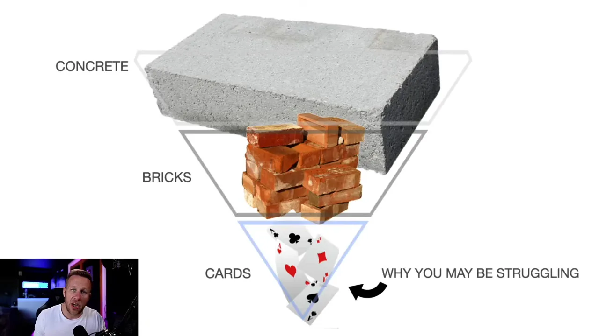
강사는 무너지는 이유를 몇 가지 들어요. 첫째, 재산 대부분이 변동이 큰 곳에 있으면 감정이 흔들려요. 둘째, 사업이든 뭐든 큰돈을 넣고 빼 본 적이 없는 사람이 시장에서 큰돈을 벌었을 때 평정을 유지하기 어려워요. 강사도 하루 13만 3천 파운드를 번 2020년 4월에는 들뜨지 않기가 쉽지 않았다고 해요.
셋째로 드는 건 인지 능력이에요. 인도 농부들이 가뭄으로 돈이 없을 때와 형편이 좋을 때를 비교한 연구에서 지능이 30%가량 오르내렸다고 해요. 그래서 돈이 절박한 상태에서는 트레이딩을 배우지 말라고 해요. 강사는 트레이딩에 IQ(Intelligence Quotient)가 적어도 115는 필요하다고도 말하는데, 이 숫자에는 근거를 대지 않아요.
하지 말아야 할 다섯 가지
아래 슬라이드의 다섯 줄이에요.
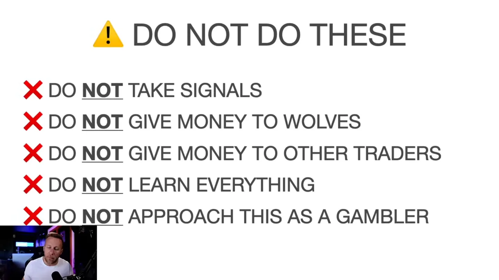
- 시그널 서비스 받지 않기 — 전략도, 확률도 모르니 연패가 오면 계획을 지킬 수 없어요. 신호가 끊기면 할 수 있는 것도 없어요.
- 늑대에게 돈 주지 않기 — 조언하는 척하면서 자기 브로커 계좌나 플랫폼, 소프트웨어로 끌어들이는 사람들이에요. 강사는 트레이더 펀딩 챌린지 상당수도 승산이 운영자 쪽에 쏠려 있다고 봐요.
- 남에게 운용 맡기지 않기 — 투기를 할 거면 그 기술은 내가 갖춰야 해요. 맡기더라도 아주 작은 비율만요.
- 다 배우려 하지 않기 — 영어 사전을 통째로 외운다고 대화를 할 수 있는 건 아니에요. 한 방향, 한 멘토로 먼저 수익을 내고, 그다음에 다른 사람 것을 조금씩 가져와요.
- 도박처럼 접근하지 않기 — 카지노에서 매일 돈을 잃는 손님은 바뀌어도, 토너먼트 테이블의 포커 선수는 매일 같아요. 숫자, 위험 관리, 계획을 갖고 사업처럼 하기 때문이에요. 시장이 위험한 게 아니라 접근 방식이 위험하다는 거예요.
해야 할 것으로는 자기 숫자를 아는 것을 꼽아요. 수입과 지출, 전망을 관리하고, 총자산의 10% 넘게 투기에 걸지 말라고 해요. 그래야 오래가는 결과를 낼 수 있다는 거예요.